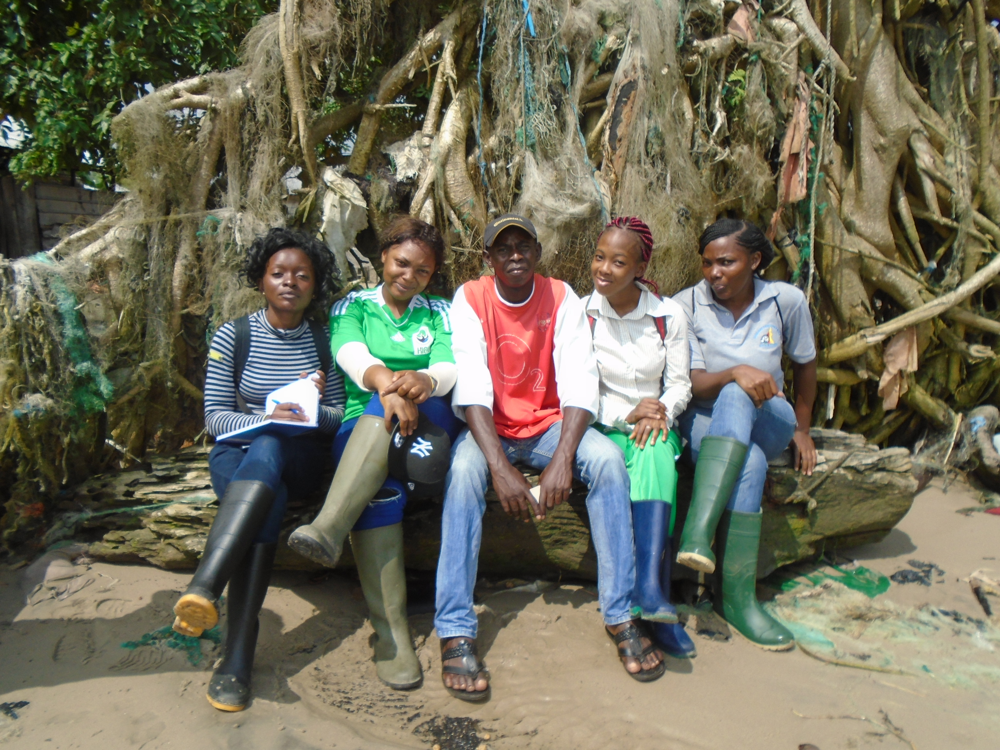

I am versed in all aspects of environmental impact assessment and collected data for my master’s thesis on the impact of anthropic activities on the carbon sequestration ability of mangrove ecosystem in Cameroon. I am presently finalizing a manuscript which I hope to publish by the end of next year in an international peer reviewed journal. My training at HIES has equipped me with excellent skills in statistics with the software R, floristic monitoring in several reserves and laboratory analysis carried out in the Laboratory of Soils, Plants, Water and Fertilizers accredited ISO 17025 at IRAD.
